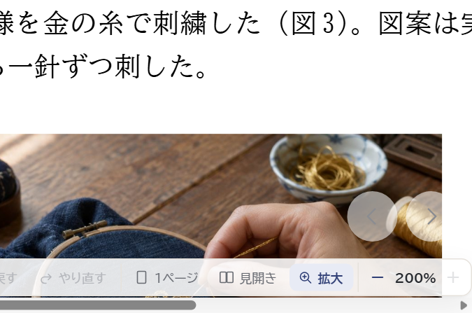
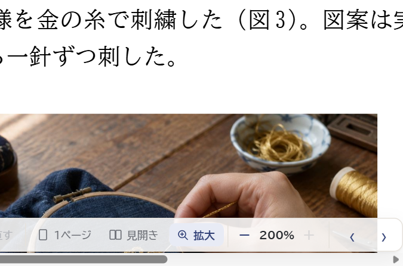
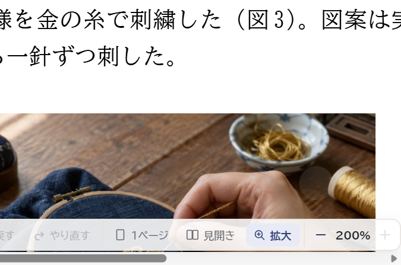
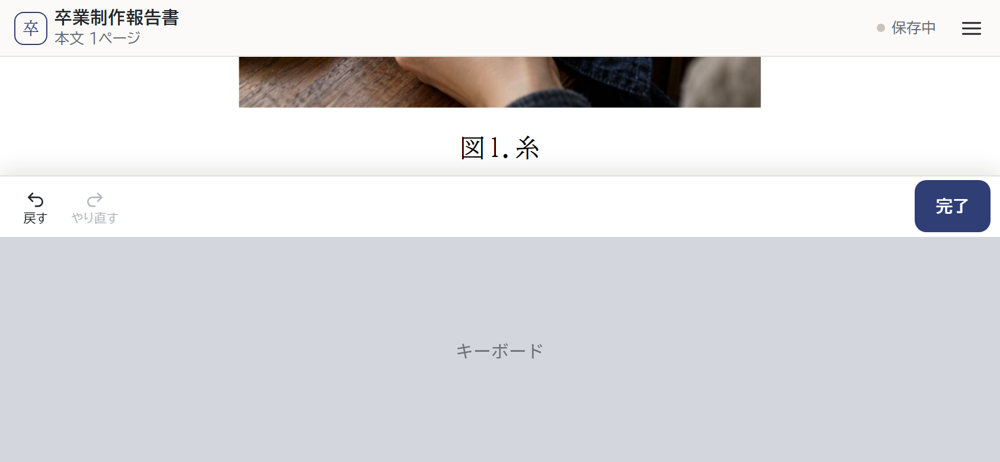
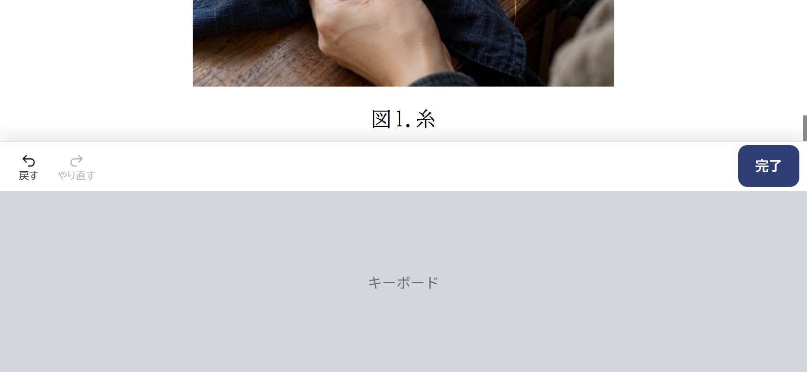
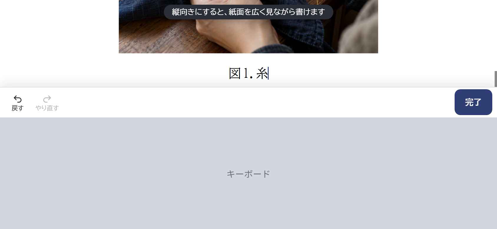
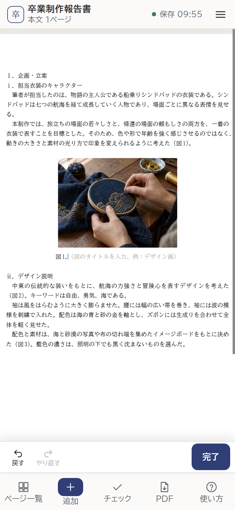
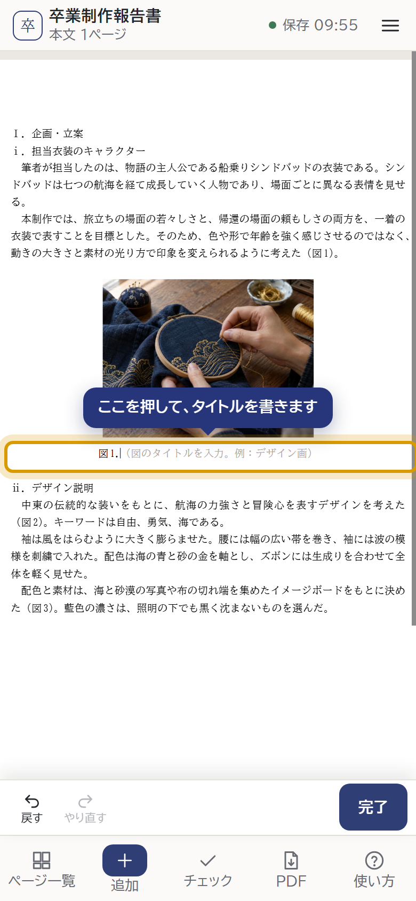
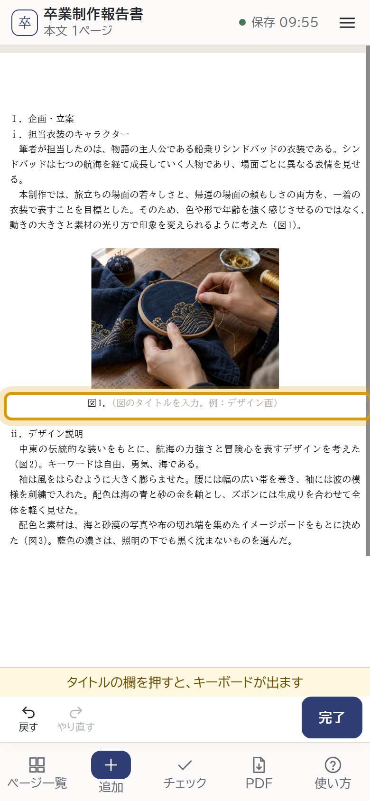

どれも見た目が変わるので、案を見て選んでください。②③のキーボードは絵です（本物のキーボードは、自動の操作では出せません）。
拡大しているときは、ページを送る「‹ ›」を紙面の右下に浮かせています。200% では紙面が画面いっぱいになるので、書いている行や写真の上に重なります。
写真の右下に「‹ ›」が重なる

拡大しているときだけ、「200%」の右に「‹ ›」。紙面には何も重ならない

場所は今のまま。重なるが、下の字や写真が透けて見える

横向きでキーボードが出ると、画面の半分がキーボードになります。上の帯（卒業制作報告書・保存・≡）と下の道具を除くと、紙面は細い帯だけです。図を入れた直後も、図の下の端とタイトルしか見えません。
図の上の方は帯の下に隠れる

紙面が上まで広がる（書き終えると帯は戻る）

はじめて横向きで書いたとき、上に「縦向きにすると、紙面を広く見ながら書けます」（数秒で消える。次からは出さない）

iPhone は、指で押した操作の中でしかキーボードを出しません。写真を選び終えたあとにタイトルの欄を開いても、キーボードは出ず、欄を自分で押すまで書けません（Android は、たいてい出ます）。下は、キーボードが出ていないときの画面です。
押せば書けることに気づきにくい

キーボードが出ていないときだけ。押すと消えて、キーボードが出る

道具の上に「タイトルの欄を押すと、キーボードが出ます」
